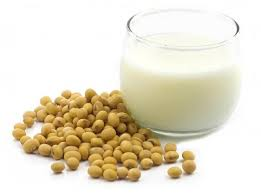

Cranky Marvel Soya milk

Description
Soybean milk is a healthy alternative to cow's milk. Soybeans are composed of proteins, carbohydrates, fats, fiber, and a powerful array of phytonutrients.
Ingredients
- Soya beans
- Coconut
- Dates
- Ginger
- Clean drinking water
Making Procedure
- Soybeans must be cooked in order to breakdown, a specific enzyme which makes them indigestible to humans.
- The cooked soya beans are then blended with sliced coconuts, dates, ginger and water in fine pulp
- This ground pulp is sieved using cheese cloth to extract the milk
- The milk is served chilled with ice cubes or bottled and stored in the refridgrator for later use.